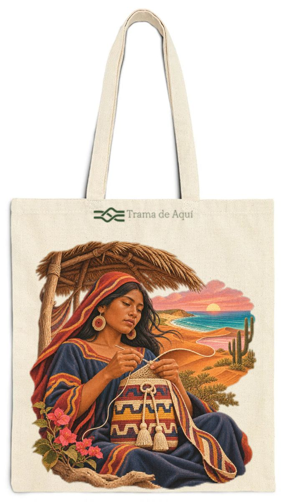
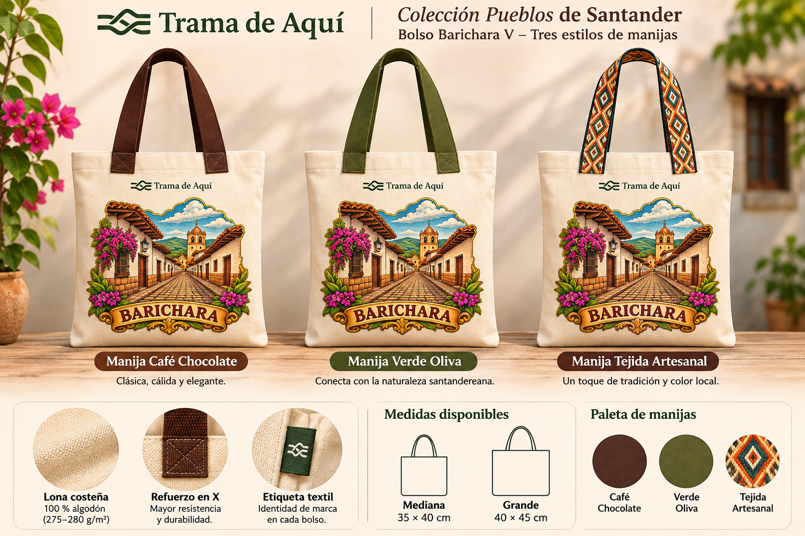
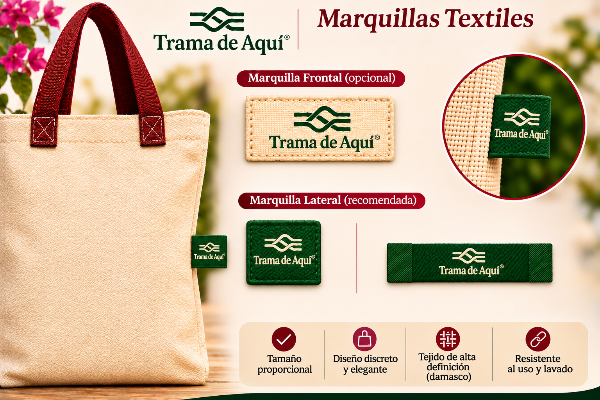

Nuestra historia
Hecho a mano, con el alma de Colombia
Trama de Aquí nació de una idea sencilla: que cada quien pueda llevar su tierra consigo. Colombia es cañón y páramo, es cacao, café y hormiga culona; es la mochila wayuu, el sombrero zenú, la marimba del Pacífico y las mariposas amarillas de Macondo. Todo eso cabe en un bolso que usas todos los días.
El nombre lo dice: trama es el hilo que cruza el tejido y le da forma, y de aquí es de esta tierra. Unimos las dos cosas: diseños con alma de Colombia, estampados en bolsos resistentes, pensados para el mercado, la universidad o el viaje.
Cada bolso se hace bajo pedido y puede ir con una tarjeta y tu mensaje. No es solo un accesorio: es un pedacito de tu tierra para ti o para quien está lejos y la extraña.
Aquí va tu toque personal: tu nombre, tu foto y por qué empezaste Trama de Aquí. Eso es lo que más conecta con la gente. Dímelo y lo escribo contigo.

Tejido en Santander, para toda Colombia.
Nuestra misión
Llevar el orgullo de la tierra a la vida diaria: diseñar y producir bolsos que celebran los pueblos, paisajes, sabores y raíces de Colombia, para que cada persona lleve lo suyo con orgullo y calidad honesta.
Nuestra visión
Ser la marca que los colombianos eligen para llevar su tierra consigo: reconocida por diseños con alma, hechos localmente y presentes en todo el país y donde haya un colombiano lejos de casa.
Lo que nos mueve
Lo que cuidamos en cada bolso
Hecho en Colombia
Diseñado y producido aquí, celebrando lo nuestro sin intermediarios.
Hecho para durar
Resistente, lavable y con asas reforzadas para el uso diario.
Diseños con alma
Pueblos, paisajes, danzas, mitos y raíces de nuestra tierra.
Listo para regalar
Lo empacamos con tarjeta y tu mensaje, si así lo quieres.
Un país entero, hilo a hilo
Cada diseño, un pedazo de Colombia
Santander, municipios, danzas, mitos, literatura y las raíces de nuestros pueblos — todo en un mismo tejido.
De nuestras manos a las tuyas
Cómo nace cada bolso
Elegimos el diseño
Cada obra nace de un pueblo, un paisaje, un mito o una raíz de Colombia, pensada para estamparla.
Lo estampamos
Con color fiel y el sello de la marca. Hecho bajo pedido.
Lo empacamos con cuidado
Con tarjeta y tu mensaje si es un regalo, listo para viajar.
Llega a tu puerta
Despachamos a toda Colombia y hasta donde haya un colombiano lejos de casa.
El bolso por dentro
Así es nuestro bolso

